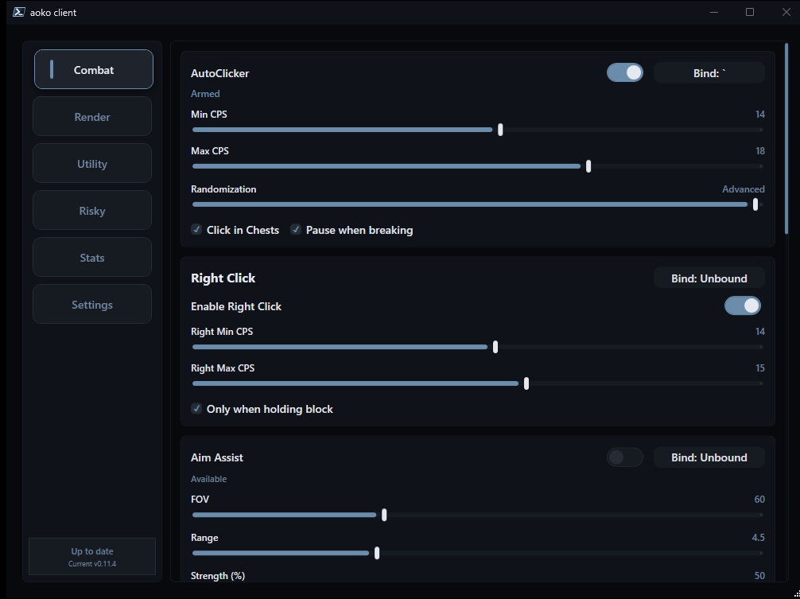

A free, open-source utility client that injects straight into Lunar. One bridge, three versions: 1.8.9, 1.21.x, and 26.1.

Everything aoko ships, grouped by subsystem. Expand a row for details.
LMB/RMB with configurable CPS range, jitter, block-only mode, and GUI/chest safety checks.
Adjustable FOV, targeting range, and smoothing strength for on-target correction.
Crosshair-gated firing with a cooldown threshold and hit-chance controls.
Reach extender with a tunable range and hit-chance gate.
Knockback dampener with horizontal / vertical percentages and hit-chance.
Ghost (inventory-only) and anarchy modes, health threshold, and elytra switch.
Hides Blindness/Nausea client-side, plus Darkness on 1.21 / 26.1.
Edge sneak assist with block-only, hold-sneak, looking-down, and safety timing controls.
Reads the safe color and helps you get there in PixelParty / BlockParty rounds.
Player tags detailing health, armor tier, and held items.
On-screen panel showing direction, exact distance, and equipment of the nearest player.
Chest highlighting through walls with count limits and distance culling.
Highlights configured block types through terrain for quick scanning.
Configurable in-game module list (default, minimal, outlined, glass, bold) with optional logo.
External cursor-based stealer that empties containers fast, safely off the game thread.
Reads Guess-The-Build hints and lists candidate words in an overlay.
Live state, version, and active module count surfaced through Discord Rich Presence.
last checked · session 00:00:00
How the loader and native bridge talk to the game.
javaw.exeSwapBuffersInjecting into a running world is recommended so every module initializes.
Aoko.exe.Open-source build for Windows x64.
# or build from source — see README.md